Train layouts for standard brick track · for makers with a 3D printer
Build with the track you own. Print the rest.
Design a railway in your browser around the track you already own: helixes, yards, turntables, bridges. Test-drive real brick trains over it in 3D, then download labelled print plates for everything you don't own, with an illustrated assembly guide.
Nothing is sent to your printer: you open the plates in your own slicer and print them yourself.

How it works
Three steps, one project. Go back and forth as often as you like.
-
1Build
Lay the track
Place pieces in a top or 3D view; they snap end to end. The track you own goes down first, and printed straights, curves, junctions, climbs and mechanisms fill in around it. Checks list anything that won't work, in plain words.
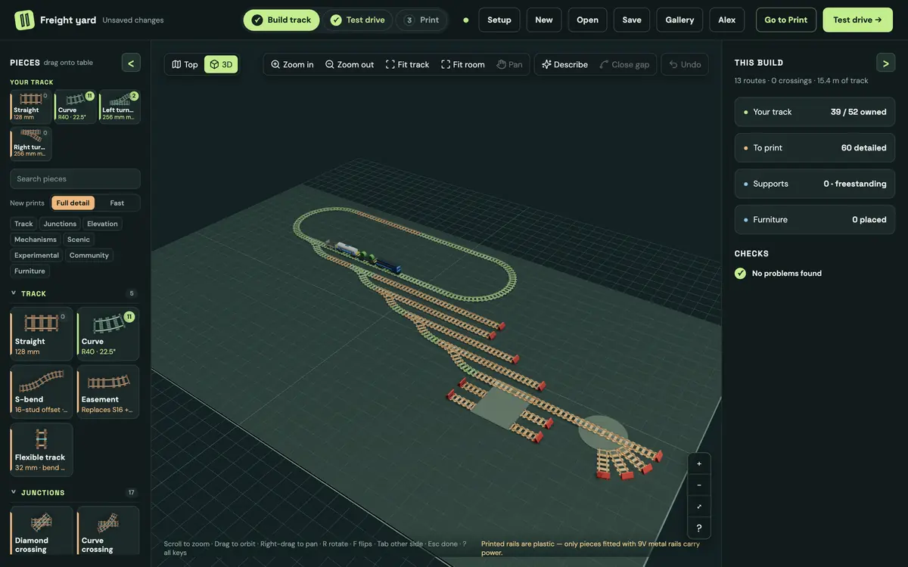
-
2Test drive
Run a real train over it
Pick from 62 real brick train sets with 126 cars, drawn from their LDraw models, or enter your own cars. Set the points and mechanisms, press play, and see where a route ends and why. It is a preview: only your real train proves the layout.
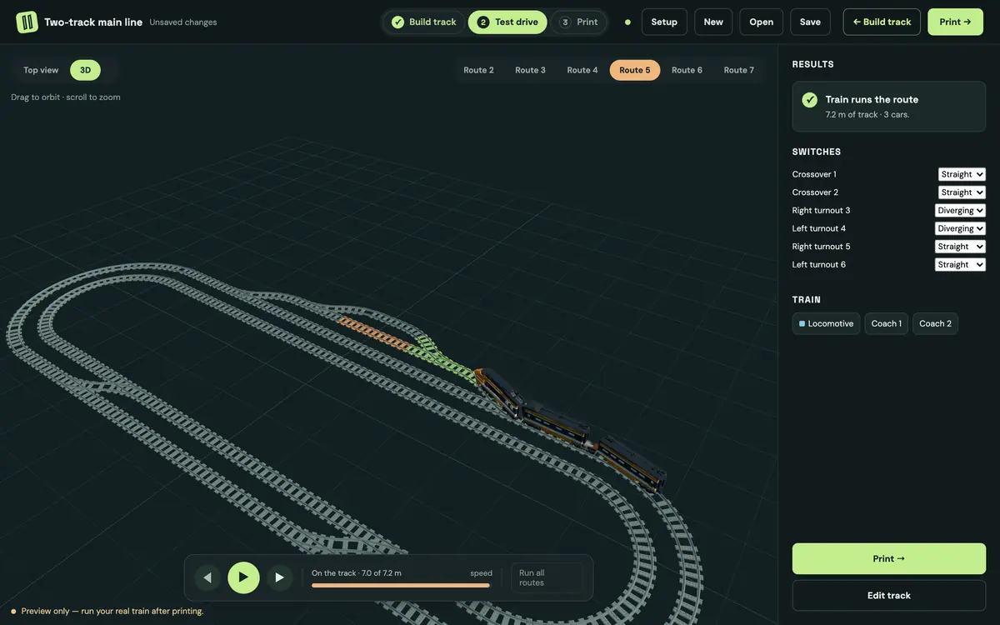
-
3Print
Download plates for your slicer
Choose your printer, prepare plates and download everything at once: plain 3MF plates, STL files, Bambu Studio projects with G-code, and a PDF assembly guide. Every part carries a short code, so you know where it goes.
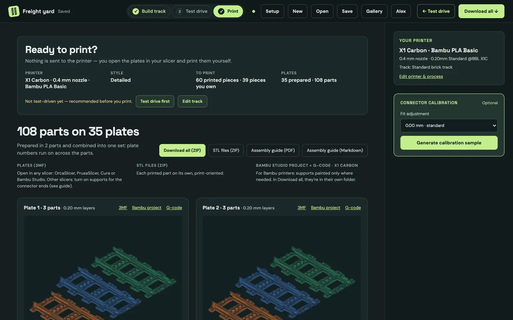
What's in the box
Every screenshot on this page is a real layout made in the app.
-
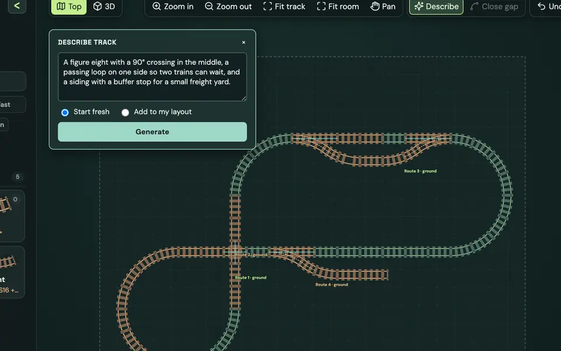
Describe it in words
Type “a figure eight with a crossing, a passing loop and a freight siding” and Claude drafts a track plan. The app lays it, checks it, lets Claude repair it, and shows it ghosted on your table to accept, refine or discard.
-
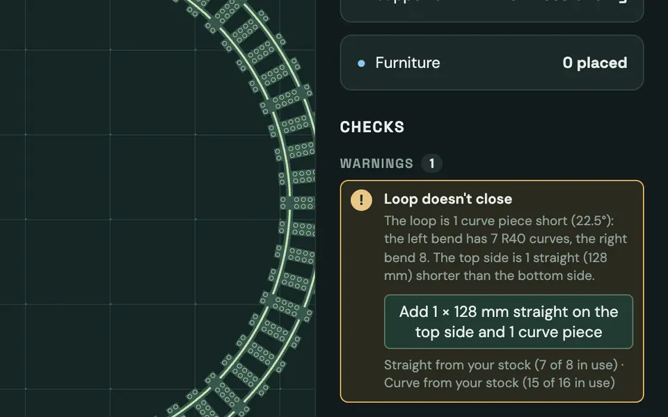
Checks that explain, and offer a fix
One row per problem: “The loop is 1 curve piece short (22.5°).” Click it to outline the pieces. Where one change fixes it, the row offers it as one undoable edit, tried on a copy first: any new problem it would cause is said before you click.
-
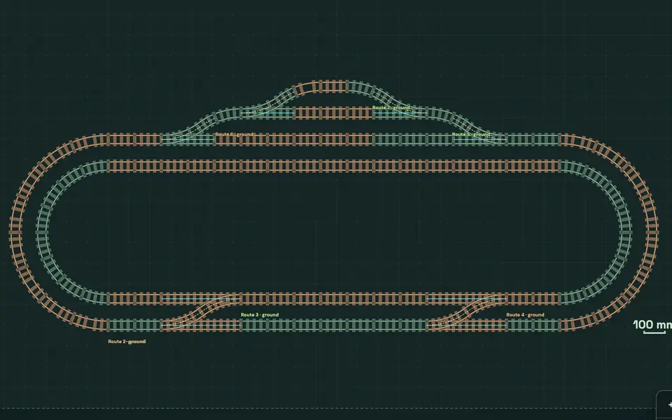
Printed track and junctions
Straights of any length, curves from R24 to R184, S-bends, easements and flex track. Turnouts with manual, sprung or servo points, crossovers, wyes, three-way turnouts, crossings and gauntlet track. Scenic pieces too: buffer stops, rerailers, street track and level crossings.
-
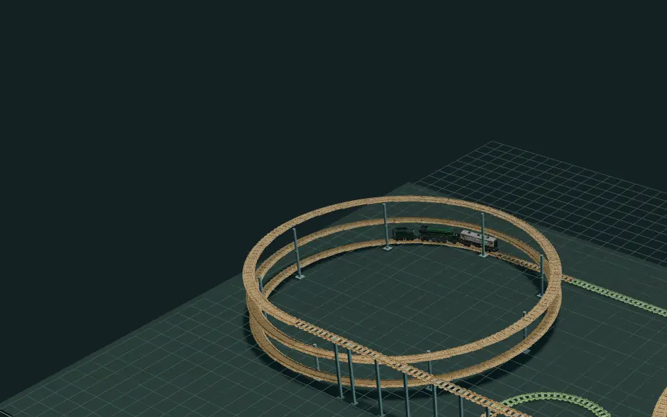
Helixes, climbs and bridges
The helix kit stacks turns with room for your tallest car between them. “Go up or down” lays one eased climb to any height. Flyover and wall-run kits, bridge decks, riser blocks and support columns too; the checks measure the clearance under every crossing against your cars.
-
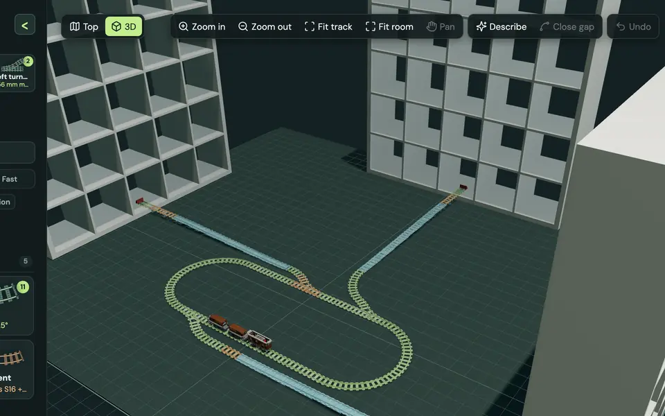
Your room and your furniture
Set the room size and place real shelving with its real heights. Climbs aim straight for a shelf compartment's floor, and the checks catch any track that would run into a panel or out of the room.
-
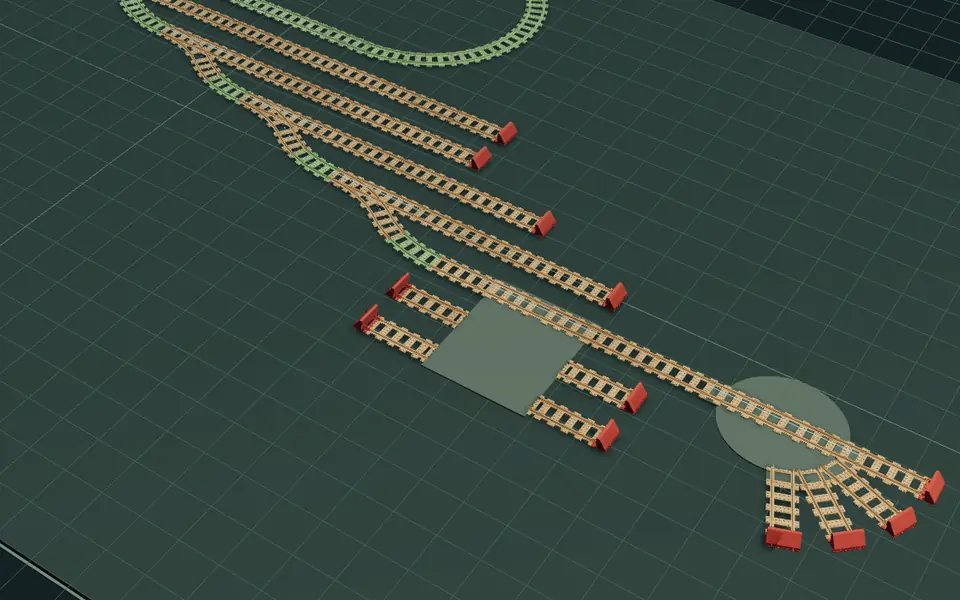
Mechanisms that move
Turntables, transfer tables, sector plates, lift-out, hinged, bascule, swing and lift bridges, a train elevator and an uncoupler. Each says what drives it: by hand, a crank, a Bluetooth or infrared motor, or a servo. Test drive moves them too.
-
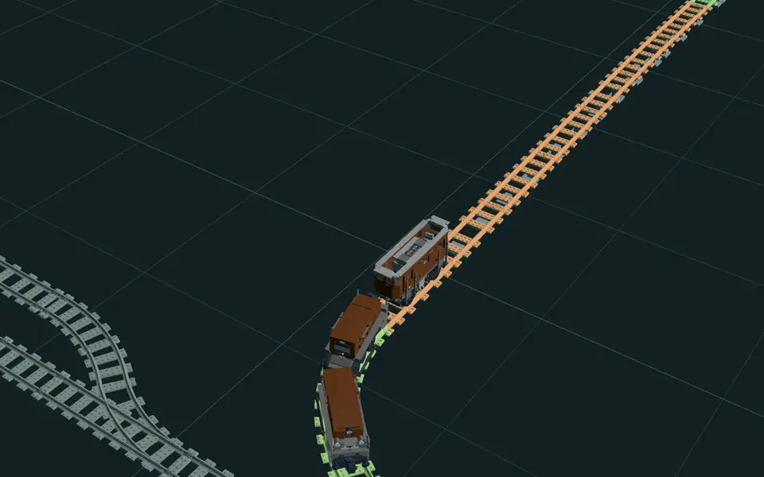
Real brick trains
Search 62 real train sets by number, name or power, from 1960s locomotives to the Horizon Express and the Crocodile, and add a whole set or single cars. The 126 cars ride their bogie pivots and couple face to face through curves.
-
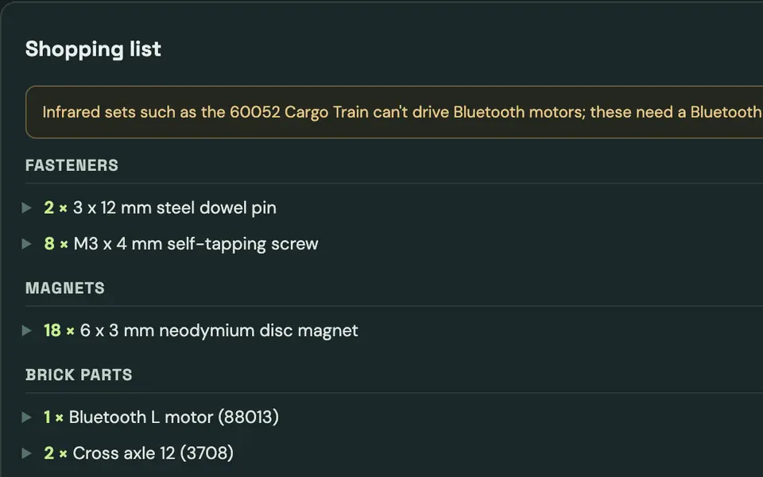
A shopping list as you build
Every printed piece knows the bought parts it needs: screws, magnets, bearings, brick axles, pins and motors, servo boards. The list adds them up for the whole layout as you build. Copy it or download a CSV.
Your track first
Tell Setup which track you own. Those pieces are laid first, and printed pieces fill the gaps: the extra turnouts, the odd-length straight, the helix, the turntable.
- Owning fewer pieces than a layout needs is a warning, never a blocker.
- The track you own is never swapped for printed pieces unless you choose to.
- The build summary counts both, so you know exactly what to print.
In this freight yard the oval and most turnouts are track you own (grey). The yard ladder, uncoupler, transfer table and turntable print (orange).
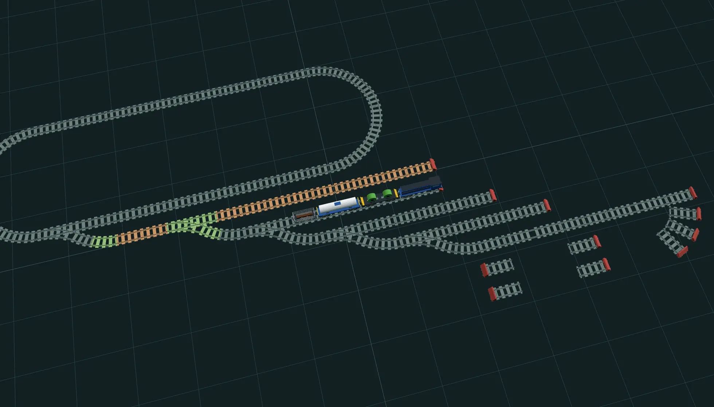
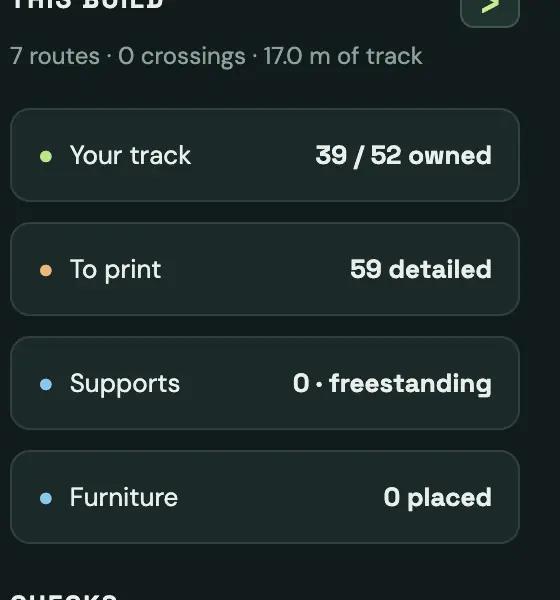
Print it on your printer, slice it in yours
- Pick your printer: Bambu Lab X1 Carbon or A1 mini. Parts are sized and split for its bed.
- Plain 3MF plates that open in OrcaSlicer, PrusaSlicer, Cura or Bambu Studio (turn on supports for the connector ends; the guide shows where).
- Bambu Studio projects with G-code, supports painted only where needed, plus every part as an STL.
- Full detail or fast: fast pieces keep the connector ends and both rails for about half the print time.
- Connector calibration sample: print it, test it on your own track, and nudge the fit between −0.15 and +0.15 mm.
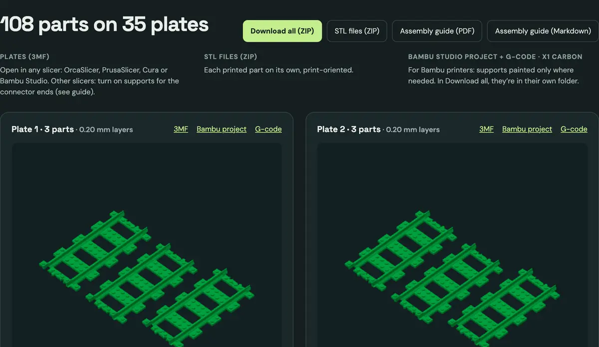
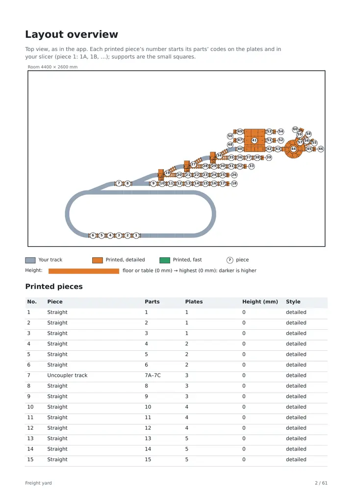
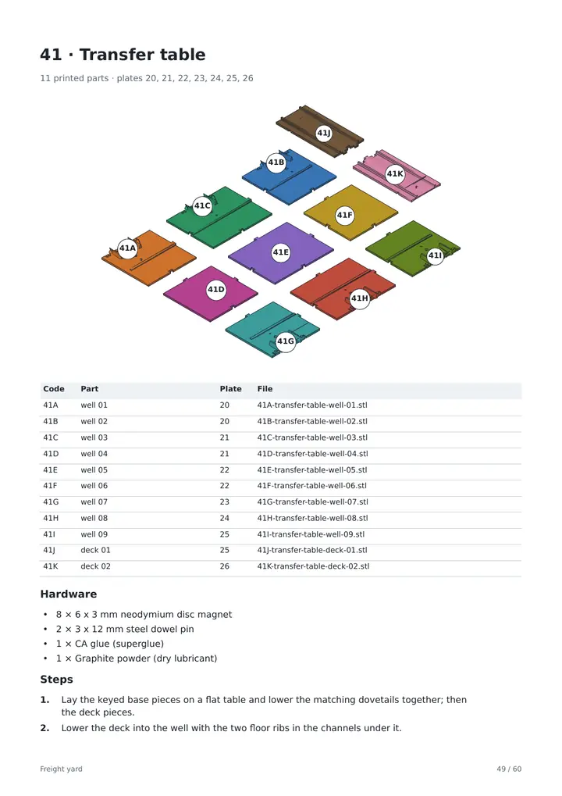
The PDF guide
The freight yard's guide runs to 60 pages: a cover with printer, style and totals; the layout from above with every piece numbered; the shopping list; one page per plate with its parts, time and filament; and exploded drawings with numbered steps for every turnout and mechanism. The same part codes appear in your slicer's object list and the STL file names.
The community library
Track pieces, trains and furniture made by Plateway members, free under CC BY 4.0 and already in the app's palette: nothing to download.
How contributing works
-
1Upload
In the app's Contribute: an STL piece, a GLB train car or a furniture form.
-
2Automatic checks
Printability checks run at once; a failed upload says why.
-
3Quick look
A person looks it over; a rejection always gives the reason.
-
4Published
Merged on GitHub, it is in everyone's palette within minutes.
- Credited by name in the app, on GitHub and in every guide that prints it.
- Prints as uploaded, never regenerated.
- Retired items keep working in layouts that use them.
The layout gallery
Whole layouts members designed in Plateway and shared for anyone to open, test drive and remix. Browsing needs no account.
-
Share yours
Publish from the app's Gallery: it is live at once under CC BY 4.0, credited to your display name. Your owned-track inventory, fit and print settings are never shared.
-
Browse others
Newest first, open to anyone. Look around a layout in 3D and test drive it without touching your own work.
-
Remix one
Remix copies a layout into your editor as your own project, with your printer, material and fit, and credits the original by name.
-
Kept clean
Anyone can report a layout. A person reads every report and hides what doesn't belong; its author is told why.
Start in your browser
Nothing to install. Open it and start laying track.
-
1Open
Open Plateway
Start from a blank table, pick one of the example layouts, or describe the layout you want in a sentence.
-
2Set up
Your room, your track, your train
Enter the room size and place your furniture, say which track you own, pick your trains from the catalogue and choose your printer.
-
3Build to print
Build, test drive, print
Lay the track until the checks are clear, run your trains over every route, then download the plates and the assembly guide.
FAQ
Do I need to own any track?
No. Choose None under Your track in Setup and every piece prints. A new project starts with the track from a typical starter set: 8 straights and 16 R40 curves.
Do I need Bambu Studio or a Bambu printer?
No. The plain 3MF plates and STLs open in any slicer: OrcaSlicer, PrusaSlicer, Cura or Bambu Studio. The Bambu Studio projects with G-code are an extra for Bambu printers. Plates are currently sized for a Bambu Lab X1 Carbon or A1 mini bed.
Will printed pieces clip onto my track?
The connector ends are made for standard brick track (L-gauge), but every printer and filament differs. Print the connector calibration sample, test both ends on your own track, and record Too tight, Fits or Too loose. You can reuse the fit adjustment in other projects with the same printer settings.
What hardware do mechanisms need?
Turnouts take M3 screws; tables and bridges take magnets and steel pins; motors, hubs and servos are bought parts. The shopping list names everything for your layout before you print.
Can my metal-rail 9 V train run on printed track?
Not on plain printed track: the rails are plastic, and only pieces fitted with metal rails carry power.
Can I share a piece, train or furniture I made?
Yes. Sign in with a verified email, open Contribute in the app and upload it. After the automatic checks and a quick look it is published to the community library under CC BY 4.0, credited to your display name, and stays public on GitHub.
Do community pieces use my fit adjustment and print style?
No. A community piece prints exactly as its contributor uploaded it, so the fit adjustment and the full-detail or fast style don't apply to it. The receipt says so. If a piece is later retired, layouts that use it still open and print it.
Can I share a layout I designed?
Yes. Sign in with a verified email, open Gallery in the app and choose Publish your layout. It is public at once in the gallery under CC BY 4.0, credited to your display name. The track, shelves, room size and train are shared; your owned-track inventory, test-drive notes, connector fit, printer and print settings are not. You can unpublish it at any time, and remixes of it keep their credit.
What happens when I remix someone's layout?
It opens in your editor as a new project of your own, with your printer, material, print settings and connector fit rather than the author's. It credits the layout you remixed, and the layouts that one remixed, by name. From there you change, save and print it like any other project.
Is Plateway affiliated with a toy company?
No. It's an independent project; see the Terms.